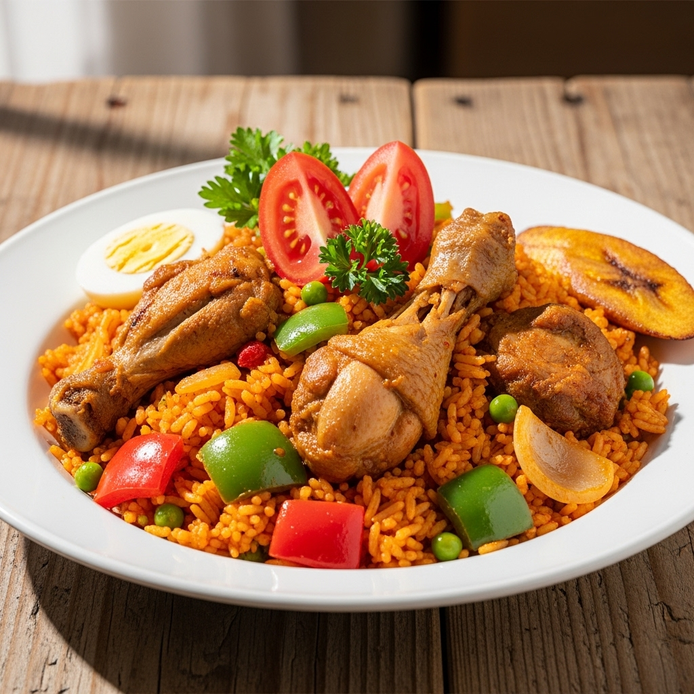
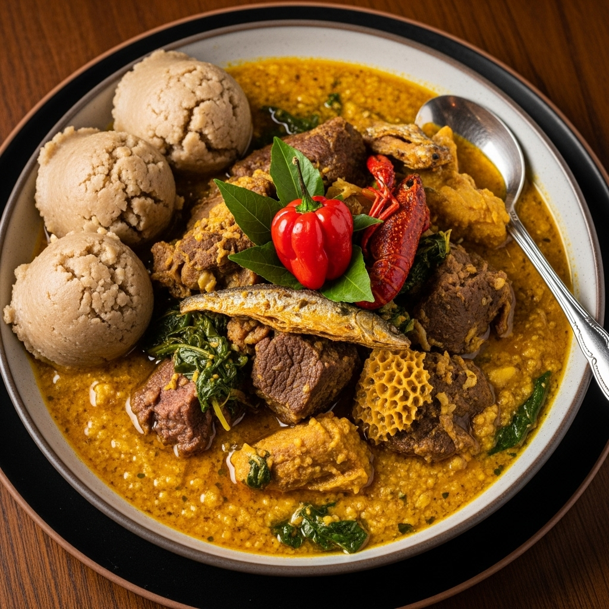
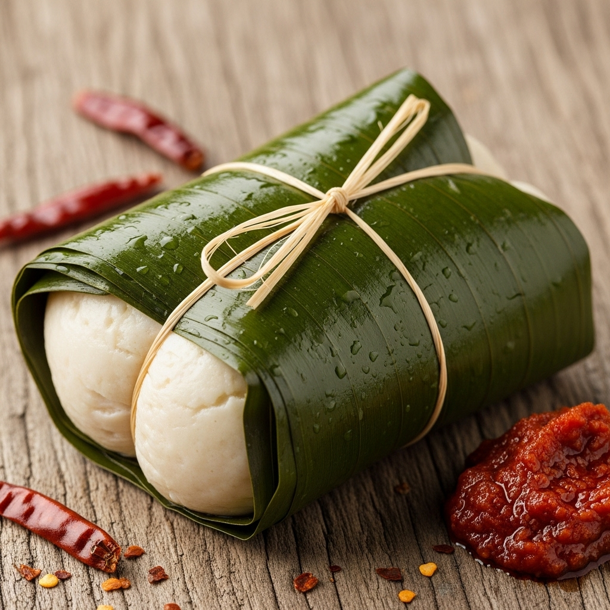

A flavorful rice dish cooked in a tomato, onion, and pepper-based sauce, often made with Scotch bonnet peppers for a spicy kick. It can be served with meat, chicken, or fish.
Price: #1500
A rich and thick soup made from ground dried melon seeds (egusi), often combined with vegetables like spinach or bitter leaf, and protein such as meat, fish, or even mushrooms.
Price: #2000
A soft, dough-like food made from a variety of starchy root vegetables or flours, such as yams, cassava, or plantains. It is often described as having a smooth.
Price: #1000
